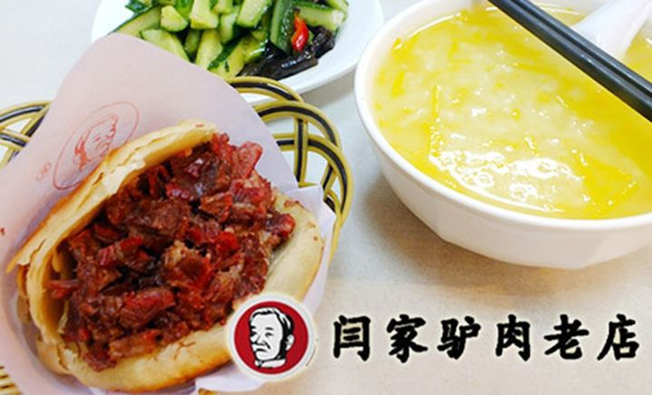
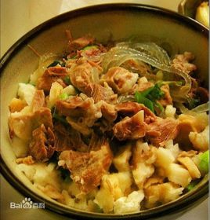
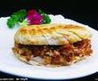
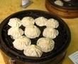
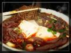
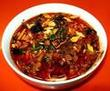
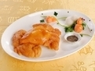
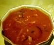
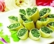

文章作者：小苏子 2016.3.15
保定驴肉火烧是河北保定著名汉族小吃，和保定三宝（王铁匠铁球，保定面酱，保定春不老）并驾齐驱。即把熟驴肉夹到火烧里食用，火烧口感酥脆，驴肉肥而不腻，回味醇厚。驴肉火烧为一种面食，一般为死面做成（注：死面为未经发酵的面粉，经过发酵的面粉叫做活面，用活面做成的类似东西称为“烧饼”），将其在饼铛里烙熟后，架在灶头里烘烤，使其外焦里嫩，别具风味；趁热用刀劈开，加入热腾腾的熟驴肉，是最正宗的吃法。另有肉汤加淀粉熬制的焖子夹入火烧佐食，其中以保定南部定州地区的焖子最为美味和著名。
羊肉泡馍是陕西的风味美食，尤以西安最享盛名。它烹制精细，料重味醇，肉烂汤浓，肥而不腻，营养丰富，香气四溢，诱人食欲，食后回味无穷。因它暖胃耐饥，素为西安和西北地区各族人民所喜爱，外宾来陕也争先品尝，以饱口福。新中国成立以来，特别是近年来用以招待国际友人，也深受好评。羊肉泡馍已成为陕西名食的“总代表”。
其他吃的~
肉夹馍
灌汤包
粉丝汤
岐山臊子面
菠菜面
葫芦鸡
水晶饼
胡辣汤
葫芦头
春卷
文章作者：小苏子 2015.3.15
| 汤食 | 面条 | 评价 |
|---|---|---|
| 烩麻食 | 菠菜面 | 评价 |
| 烩麻食 | 菠菜面 | 评价 |
| 烩麻食 | 菠菜面 | 评价 |
| 烩麻食 | 菠菜面 | 评价 |
| 总结 | 好吃 | |
邮箱地址请按要求格式输入
请输入密码： 请重复输入密码：
密码请为6-16位英文数字
版权所有©